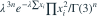

，
， 独立，密度为 ，x>0，未知速率λ>0。以下哪个是一维充分统计量？
独立，密度为 ，x>0，未知速率λ>0。以下哪个是一维充分统计量？- A

- B

- C
- D

我已思考，展开答案与解析
正确答案：A
- 联合密度为

。 - 含λ的部分只通过
 依赖数据，因子分解定理给出充分性。
依赖数据，因子分解定理给出充分性。 - 自然参数 含开区间；此固定形状Gamma族中T也完全。
易错提醒形状已知、速率未知时只需ΣX；形状也未知时还涉及Σlog X。
考后回忆 · 条件重建 · 回忆5的指数族补强；Ross第2.3.3节仅作分布背景
依据考试回忆重建；数字、选项和必要条件为补充设定，非原题。